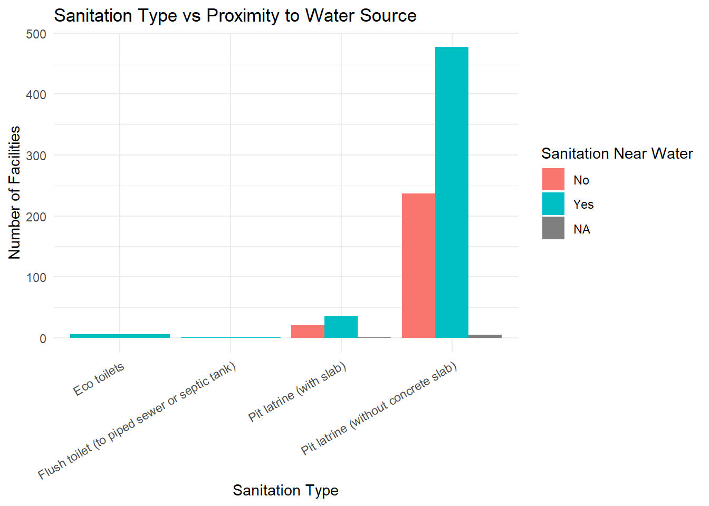

This dataset was collected as part of the Open Defecation Free (ODF) Verification Exercise conducted in 2019 across selected Traditional Authorities (TAs) in Dowa and Ntchisi districts in Malawi. The data was gathered using the mWater platform under the coordination of BASEflow, a Malawian NGO focused on strengthening sustainable access to water, sanitation, and hygiene (WASH).
The dataset includes household-level observations on sanitation facility types, hygiene practices, and menstrual hygiene management (MHM). It captures the availability, usage, and quality of latrines, handwashing facilities, and bathing areas—along with behavioral indicators like privacy, safety, and waste disposal practices. The goal was to assess whether communities met the conditions for ODF certification.
Potential Use Cases
This dataset may be useful for:
WASH Practitioners and NGOs To monitor sanitation coverage, identify behavior change needs, and design targeted interventions in rural settings.
Government Agencies and District Councils As evidence for validating ODF status, planning sanitation improvements, and aligning with national sanitation strategies.
Researchers and Public Health Experts To study sanitation behavior, infrastructure gaps, and their impact on community health and hygiene.
Development Partners and Donors To track progress towards SDG 6 (Clean Water and Sanitation), evaluate past investments, and guide future funding priorities.
Advocacy and Communication Specialists To develop localized messaging and campaigns promoting sustained use of improved sanitation and hygiene practices.
Installation
You can install the development version of dowaodfsurvey from GitHub with:
# install.packages("devtools")
devtools::install_github("openwashdata/dowaodfsurvey")
## Run the following code in console if you don't have the packages
## install.packages(c("dplyr", "knitr", "readr", "stringr", "gt", "kableExtra"))
library(dplyr)
library(knitr)
library(readr)
library(stringr)
library(gt)
library(kableExtra)Alternatively, you can download the individual datasets as a CSV or XLSX file from the table below.
- Click Download CSV. A window opens that displays the CSV in your browser.
- Right-click anywhere inside the window and select “Save Page As…”.
- Save the file in a folder of your choice.
| dataset | CSV | XLSX |
|---|---|---|
| dowaodf | Download CSV | Download XLSX |
Data
The package provides access to Open Defecation Free (ODF) Verification Exercise survey data conducted in 2019 across selected Traditional Authorities (TAs) in Dowa and Ntchisi districts in Malawi
dowaodf
The dataset dowaodf has 939 observations and 34 variables
dowaodf |>
head(3) |>
gt::gt() |>
gt::as_raw_html()| survey_date | district | gvh | health_facility | sanitation_observed | sanitation_type | pit_cover_or_seal | sanitation_near_water | sanitation_distance | has_privacy | has_security | has_roof | shared_sanitation | child_faeces_disposal | child_faeces_disposal_other | usual_defecation_place | faeces_seen_in_village | faeces_around_house | handwash_near_sanitation | handwash_has_water | handwash_has_soap | handwash_in_use | mhm_materials_used | mhm_cleaned | mhm_cleaning_method | mhm_drying_method | mhm_disposal_place | has_bathroom | bathing_has_water | bathing_water_source | bathroom_has_soap | bathroom_in_use | bathroom_has_privacy | bathroom_has_security |
|---|---|---|---|---|---|---|---|---|---|---|---|---|---|---|---|---|---|---|---|---|---|---|---|---|---|---|---|---|---|---|---|---|---|
For an overview of the variable names, see the following table.
| variable_name | variable_type | description |
|---|---|---|
| survey_date | character | Date the household survey was completed |
| district | character | Name of the district where the household is located |
| gvh | character | Name of the Group Village Headman (GVH) area |
| health_facility | character | Name of the nearest or associated health facility |
| sanitation_observed | character | Whether a sanitation facility was observed at the household |
| sanitation_type | character | Type of sanitation facility observed (e.g., pit latrine, flush toilet) |
| pit_cover_or_seal | character | Whether the facility has a pit cover or water seal to block flies |
| sanitation_near_water | character | Whether the sanitation facility is located within 30m of a water point |
| sanitation_distance | character | Approximate distance of the facility from the household |
| has_privacy | character | Whether the sanitation facility offers visual privacy |
| has_security | character | Whether the sanitation facility provides physical security |
| has_roof | character | Whether the facility has a roof to prevent rain entry |
| shared_sanitation | character | Whether the sanitation facility is shared with other households |
| child_faeces_disposal | character | How faeces of children are disposed of (e.g., in toilet, open area) |
| child_faeces_disposal_other | character | If other disposal method is used, specify it |
| usual_defecation_place | character | Where household members usually defecate |
| faeces_seen_in_village | character | Whether respondent observed faeces in the village in the past 6 months |
| faeces_around_house | character | Whether faeces were observed around the household at the time of visit |
| handwash_near_sanitation | character | Whether a handwashing facility is within 10 paces of the sanitation facility |
| handwash_has_water | character | Whether the handwashing facility has water available |
| handwash_has_soap | character | Whether soap is available at the handwashing station |
| handwash_in_use | character | Whether there is evidence that the handwashing station is being used |
| mhm_materials_used | character | Menstrual hygiene materials used by women in the household |
| mhm_cleaned | character | Whether reusable menstrual materials are cleaned |
| mhm_cleaning_method | character | How menstrual materials are cleaned (e.g., water and soap) |
| mhm_drying_method | character | How menstrual materials are dried (e.g., sun, inside room) |
| mhm_disposal_place | character | Where menstrual materials are disposed of |
| has_bathroom | character | Whether the household has a designated bathroom facility |
| bathing_has_water | character | Whether sufficient water is available for bathing |
| bathing_water_source | character | Source of water used for bathing (e.g., borehole, unprotected spring) |
| bathroom_has_soap | character | Whether soap is available at the bathroom facility |
| bathroom_in_use | character | Whether there is evidence that the bathroom facility is being used |
| bathroom_has_privacy | character | Whether the bathroom offers visual privacy |
| bathroom_has_security | character | Whether the bathroom provides physical security |
Example Visualization
library(dowaodfsurvey)
# Visualization: Sanitation vs Proximity to Water (Grouped Bar Chart)
# Purpose: Important for understanding contamination risk and public health safety.
# Load necessary libraries
library(ggplot2)
library(dplyr)
library(readr)
# Step 1: Load your package
library(dowaodfsurvey)
# Step 2: Clean and prepare data
data_clean <- dowaodf %>%
filter(
!is.na(sanitation_type),
sanitation_type != "No toilet", sanitation_type != "NA"
) %>%
mutate(
sanitation_type = as.factor(sanitation_type),
sanitation_near_water = as.factor(sanitation_near_water)
)
# Step 3: Group and count data
summary_data <- data_clean %>%
group_by(sanitation_type, sanitation_near_water) %>%
summarise(count = n(), .groups = "drop")
# Step 4: Plot grouped bar chart
ggplot(summary_data, aes(x = sanitation_type, y = count, fill = sanitation_near_water)) +
geom_bar(stat = "identity", position = "dodge") +
labs(
title = "Sanitation Type vs Proximity to Water Source",
x = "Sanitation Type",
y = "Number of Facilities",
fill = "Sanitation Near Water"
) +
theme_minimal() +
theme(axis.text.x = element_text(angle = 30, hjust = 1))
License
Data are available as CC-BY.
Citation
Please cite this package using:
citation("dowaodfsurvey")
#> To cite package 'dowaodfsurvey' in publications use:
#>
#> Mhango E (2025). _dowaodfsurvey: ODF Sanitation and Hygiene Household
#> Survey – Ntchisi & Dowa District 2019_. R package version 0.0.0.9000,
#> <https://github.com/openwashdata/dowaodfsurvey>.
#>
#> A BibTeX entry for LaTeX users is
#>
#> @Manual{,
#> title = {dowaodfsurvey: ODF Sanitation and Hygiene Household Survey – Ntchisi & Dowa District 2019},
#> author = {Emmanuel Mhango},
#> year = {2025},
#> note = {R package version 0.0.0.9000},
#> url = {https://github.com/openwashdata/dowaodfsurvey},
#> }